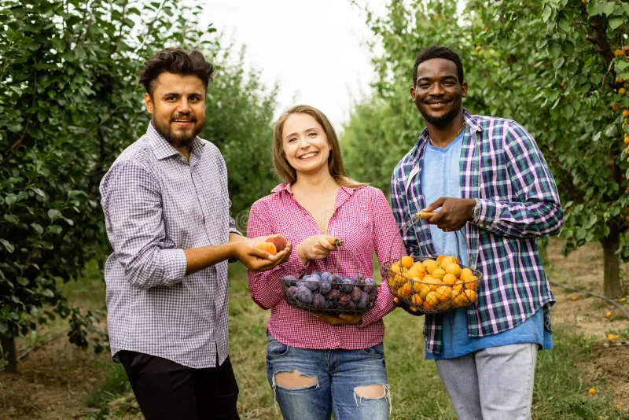
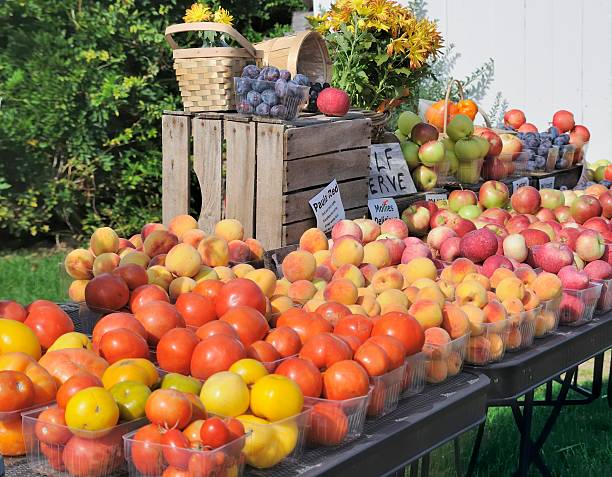

A little About us At Bountiful Foods
Who We Are
At Bountiful Foods, we believe in the power of nature's bounty to provide us with nourishment and delight. Our small fruit business has been rooted in passion and dedication since its inception, and we take pride in sharing our journey with you.
Our History
Bountiful Foods was founded in the picturesque town of Greenhaven in 1992 by a group of close-knit friends, Amelia, Benjamin, and Charlotte. Their shared love for nature and a deep appreciation for the bountiful fruits grown in the region inspired them to establish a business that would bring the freshest and finest fruits to their community.
Starting out as a humble roadside fruit stand, Bountiful Foods quickly gained popularity for its exceptional quality and friendly service. Customers would flock to our stand, eager to savor the mouthwatering flavors of our freshly picked fruits. As word spread and demand grew, we realized that we had an opportunity to make a more significant impact on people's lives.
Embracing this vision, Bountiful Foods expanded its operations to collaborate directly with local farmers who shared our commitment to sustainable and organic farming practices. By sourcing our fruits locally, we ensure that each bite is packed with the authentic flavors of our region and supports the hardworking farmers who nurture the land.
Over the years, Bountiful Foods has grown into a beloved institution in Greenhaven, known for its delectable assortment of fruits and its dedication to the community. We have extended our reach to supply our fruits to local restaurants, schools, and other small businesses, allowing us to make a positive impact on the entire region.
Our Philosophy
At Bountiful Foods, we hold a deep respect for the environment and strive to minimize our ecological footprint. We believe that by working in harmony with nature, we can bring the most delicious and nutritious fruits to your table while preserving the beauty of our land for future generations.
Quality is at the heart of everything we do. Our commitment to excellence means that every fruit we offer undergoes rigorous quality checks to ensure it meets our stringent standards. From the moment our fruits are handpicked to the time they reach your doorstep, we take great care to deliver an experience that is nothing short of extraordinary.
Join Us on our Fruitful Journey
We invite you to embark on this fruitful journey with us. Whether you're a fruit enthusiast, a health-conscious individual, or simply seeking the pleasure of natural flavors, Bountiful Foods promises to deliver an unparalleled experience.
Explore our diverse range of fruits, discover delectable recipes on our blog, and connect with a community of like-minded individuals who share our love for wholesome living.
Thank you for being a part of our story. Together, let's celebrate the goodness of nature, one succulent fruit at a time.
Contact Us
Bountiful FoodsCarlsbad California, USA
Find us on Google
 Phone: 562-666-9999
Phone: 562-666-9999Email: info@bountifulFoods.com